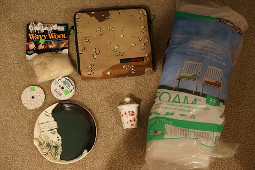

my tracking number for hina appeared on thursday. i am vibrating extremely excitedly. i've refreshed the tracking like 30 times a day since getting it. she's supposed to be here on wednesday

i ordered some stuff from rightstuf last month on 12/12 and some of the items were out of stock but i figured that wasnt the end of the world. but like, its been over a month now. i'm starting to wonder if i should just cancel it. how badly do i need to spend $50 on anime cr*p anyway?? i swear one of the items was out of stock and now the other is. I dont have proof that happened but i feel like they didnt save the item for when the other came back in stock

i found another (heart shaped) ring light for $5 so i've been having fun trying out both. i think using the round one as a halo might come out pretty cool. i'm going to have to put more thought into that one.
future white elephant gift
i thought this would fit perfectly in hina's box but i was about 2 inches too short. not entirely sure if i should put it in there anyway or what
did anyone else hear about this pokemon illustration contest?? i just got an email about it a few days ago and its been open since october?!?! surely i have no chance of winning but its always fun to draw a pokemon. i just wish i knew about it months ago!
theres so many good old entries!! only jp names though. did americans just not enter or were none chosen?